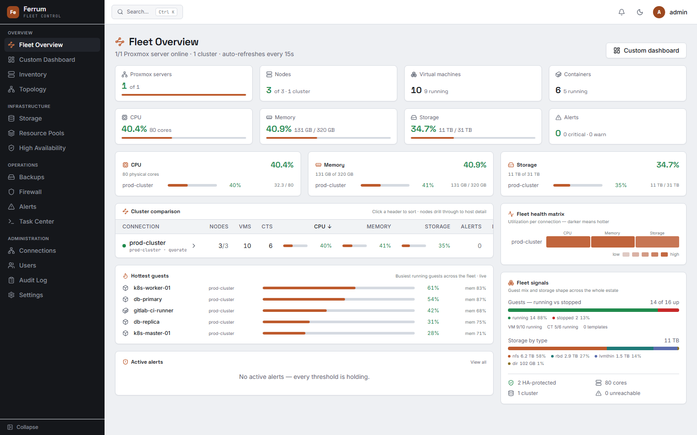
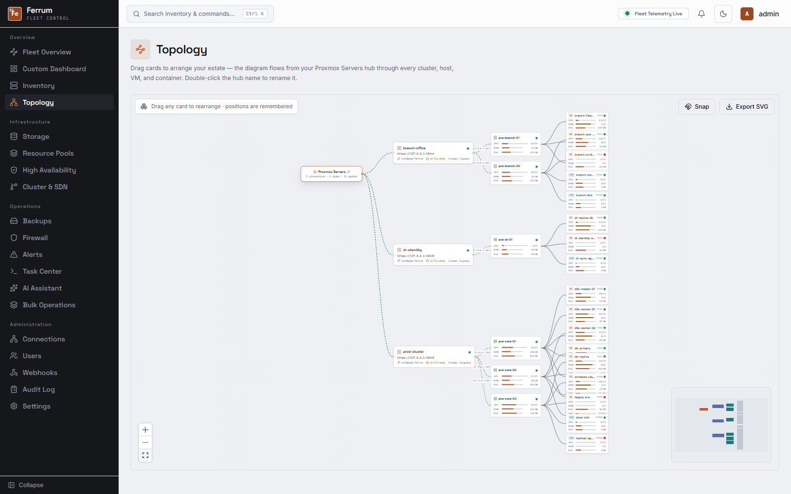
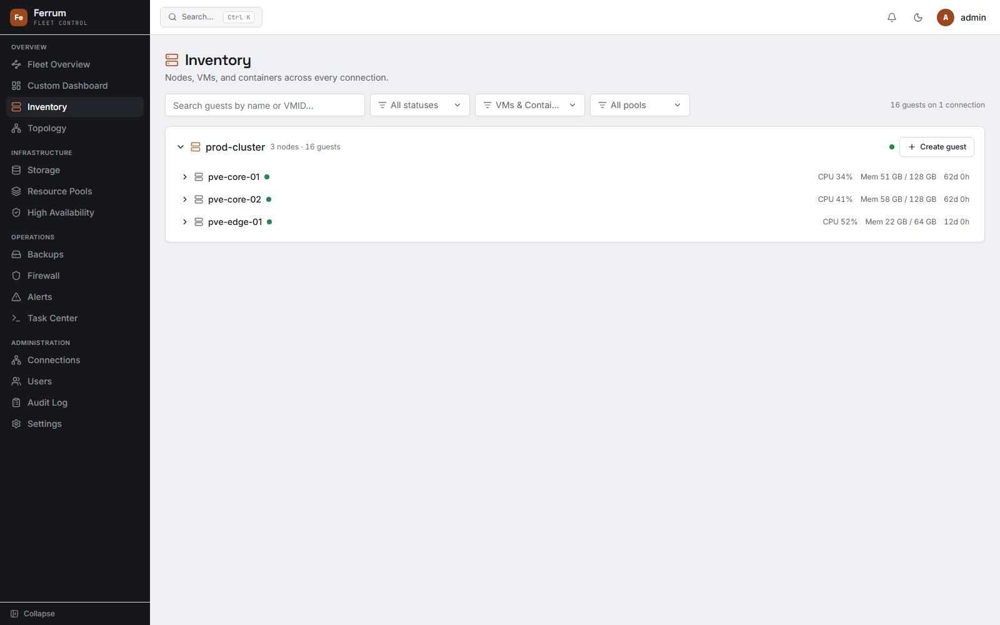
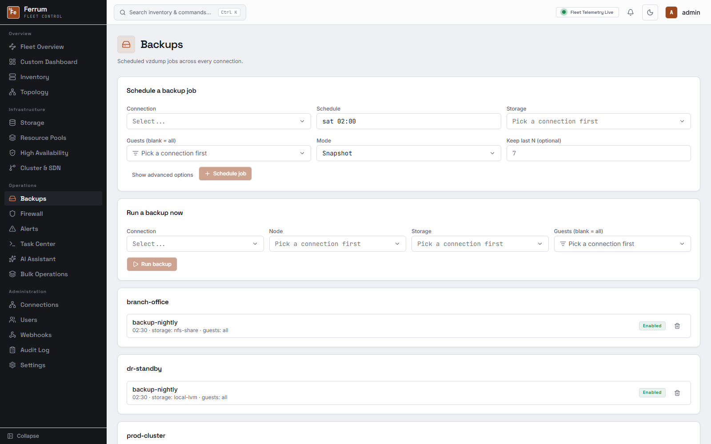
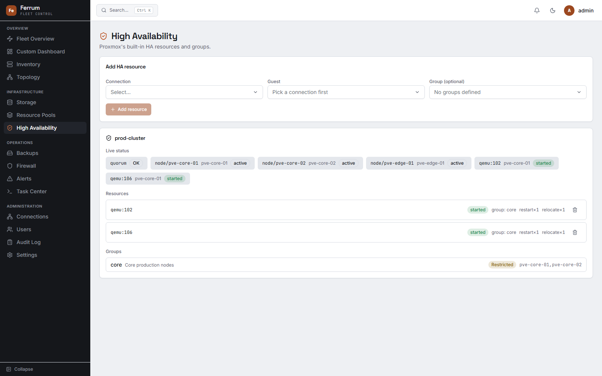
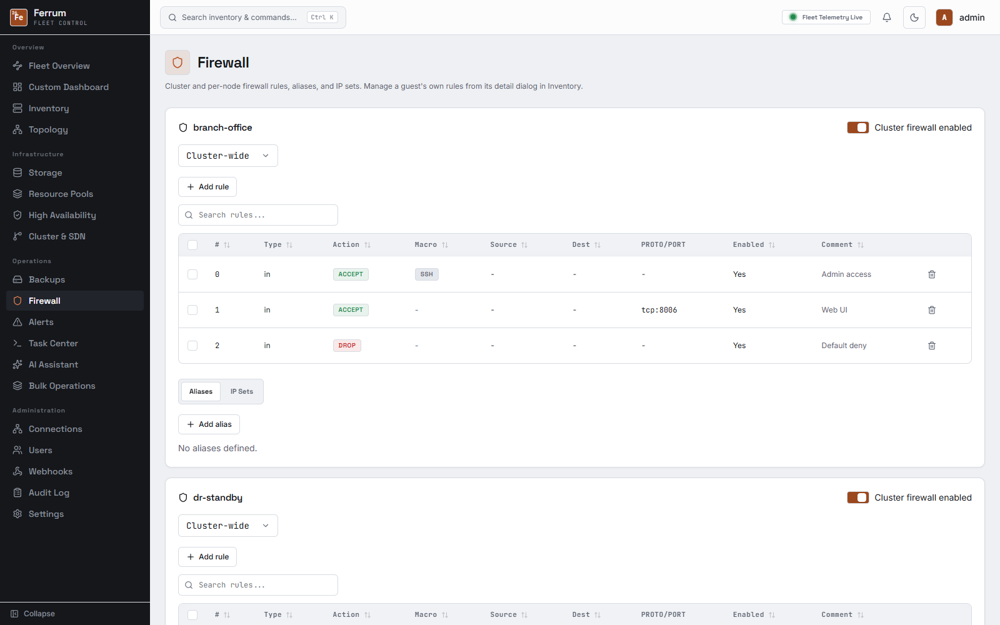

Fleet-wide overview
Every connection (cluster, standalone node, or PBS remote) rolled into one dashboard: node and guest counts, CPU/memory/storage, active alerts. Rearrange it from 20+ widgets and it stays that way per user.
Ferrum rolls every cluster and standalone node into one live view: inventory, backups, HA, firewall, alerting, and an assistant that can act on it, instead of a browser tab per host.

Ferrum isn't a prettier login screen bolted onto the Proxmox API. It keeps its own inventory, its own alert history, and its own audit trail, so it stays useful even when a node is unreachable.
Every connection (cluster, standalone node, or PBS remote) rolled into one dashboard: node and guest counts, CPU/memory/storage, active alerts. Rearrange it from 20+ widgets and it stays that way per user.
Threshold alerts on CPU, memory, disk, and guest state; config drift detection; guest lifecycle policies; capacity forecasting; a fleet health score; scheduled health-digest emails; and Terraform/Ansible inventory export, so you find out from Ferrum, not from a user.
Nodes, VMs, and LXCs with live consoles, snapshots, and a guest agent file browser.
Pool usage and Ceph health across every connection, backup job status, replication, and PBS integration alongside native PVE storage.
HA groups and resources, cluster and per-node firewall rules, and SDN zones/VNets/subnets, all scoped per connection.
Outbound webhooks and a REST API and MCP server with scoped, per-user keys for third-party tools and agents.
Per-user roles, optional OIDC single sign-on, session monitoring, and a full audit log of every mutating action, UI, API, and MCP alike.
Chats with the same tool catalog MCP exposes, using any OpenAI-compatible provider, or Needle 2, a bundled local model with no API key or network needed.
Screenshots below are Ferrum running against an actual fleet: three connections, six nodes, twenty-six VMs and LXCs across two clusters and a standalone host, with Ceph and NFS storage behind it.





Twelve look-and-feel presets ship in Settings, each with light and dark and a choice of accent color; pick one and it applies everywhere, including consoles and the AI assistant.
The live demo is a full click-through of the real interface, seeded with a fleet already running: no signup, no Proxmox host required.